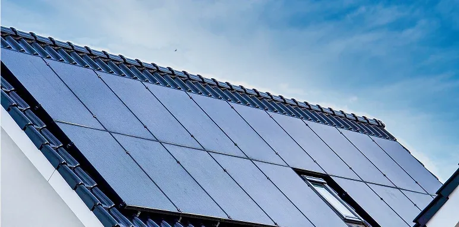
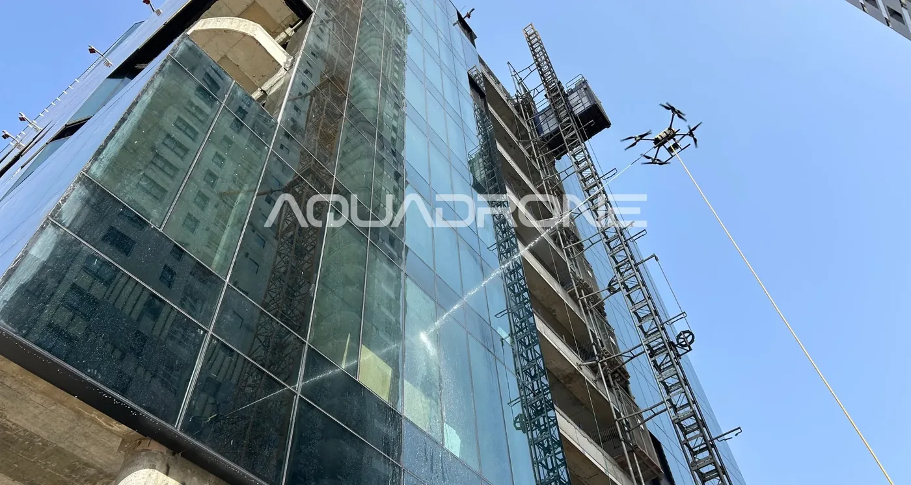
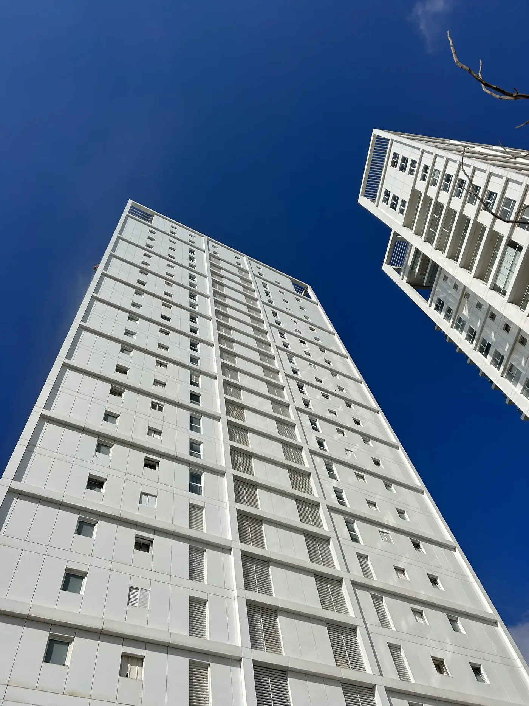
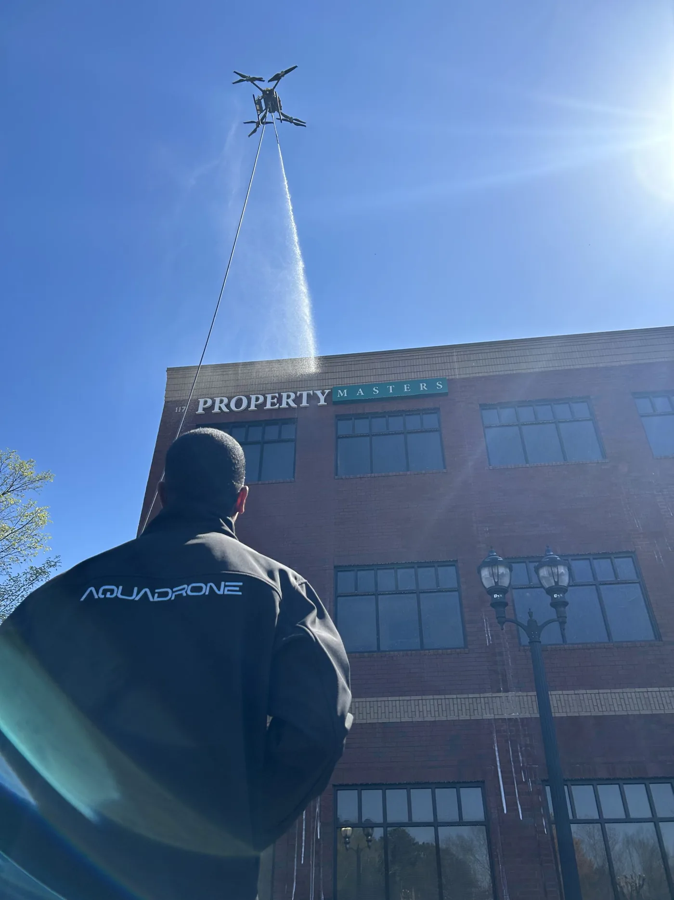
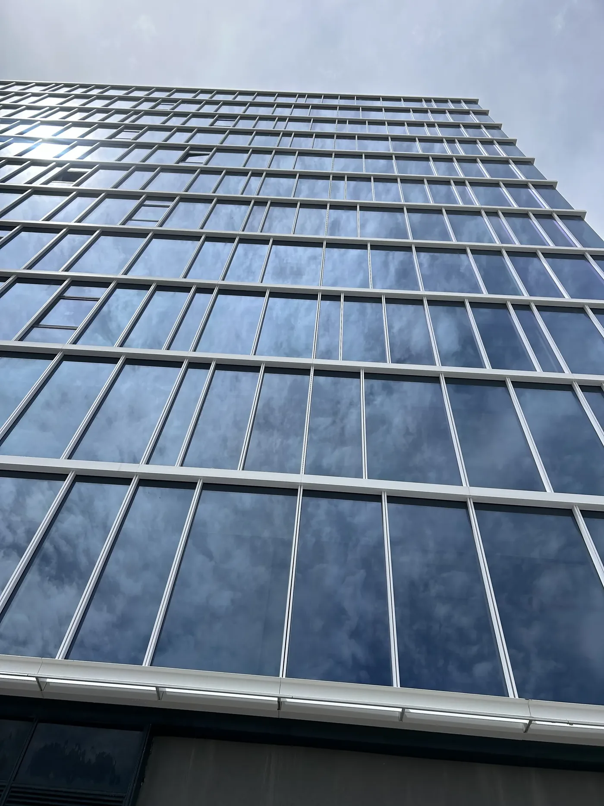

Blog
בלוג
מדריכים קצרים על ניקוי חזיתות, חלונות וגגות מהקרקע, בלי פיגומים ובלי סנפלינג.

ניקוי גגות רעפים ברחפן: מה חשוב לדעת לפני שמנקים את הגג על רעפים מצטברים אבק, טחב ולכלוך. שוטפים אותם בלחץ נמוך, בלי לדרוך על הגג, ואחרי בדיקה קצרה של השיפוע והמרזבים.
תחזוקת חזית בניין חדש: איך ניקוי ברחפן מהמסירה חוסך כסף לאורך שנים חזית חדשה מתלכלכת כבר ביום המסירה. ניקוי ראשון מסיר אבק בנייה, ושומר על הזכוכית, האלומיניום והאבן לפני שהלכלוך נחרט.
ניקוי אלוקובונד: איך מנקים פאנלים מרוכבים בלי לפגוע בגימור פאנל אלוקובונד מאבד ברק מאבק ומזיהום אוויר. מנקים אותו בלחץ נמוך ובסבון שנשטף מהר, בלי לשפשף את הצבע.
איך בוחרים חברה לניקוי חזיתות: 10 שאלות לשאול לפני שחותמים לפני שחותמים, שואלים על השיטה, מה כלול בעבודה, איזה ביטוח יש, ומה לא מנקים. התשובות חוסכות הפתעות ביום העבודה. ניקוי ללא מגע ברחפן: איך מגיעים לתוצאה נקייה בלי לגעת בחזית
בלי מגב ובלי מגע: המים, הסבון ומסלול הטיסה עושים את העבודה. זה דורש מפעיל שמכיר את החומר, לא רק את הרחפן.
ניקוי ללא מגע ברחפן: איך מגיעים לתוצאה נקייה בלי לגעת בחזית
בלי מגב ובלי מגע: המים, הסבון ומסלול הטיסה עושים את העבודה. זה דורש מפעיל שמכיר את החומר, לא רק את הרחפן.

רחפן או סנפלינג? השוואה לניקוי חזיתות וחלונות בגובה שתי השיטות מגיעות לגובה. ההבדל הוא מי נמצא על החזית, כמה זמן הדיירים מרגישים את העבודה, ואיפה צריך יד על המשטח.